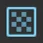
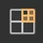
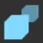

The Render Graph Viewer window displays the render graph for the current scene in the Universal Render Pipeline (URP).
For more information about the Render Graph Viewer window, refer to Analyze a render graph.
| Control | Description |
|---|---|
| Refresh | Selects whether to update the window automatically. The options are:
|
| Target Selection | Selects which project the window connects to. For more information, refer to View the render graph for a built project. The options are:
|
| Camera | Selects the camera to display the rendering loop for. |
| Pass Filter | Selects which render passes to display. For more information, refer to Pass Filter dropdown. |
| Resource Filter | Selects which resources to display. For more information, refer to Resource Filter dropdown. |
| View Options | Selects whether to display how the render pass stores and loads the resource in the main window. |
| Control | Description |
|---|---|
| Culled Passes | Displays render passes that URP hasn’t included in the render graph because they have no effect on the final image. |
| Raster Passes | Displays only raster render passes created using renderGraph.AddRasterRenderPass. |
| Unsafe Passes | Displays only render passes that use the AddUnsafePass API to use CommandBuffer interface APIs such as SetRenderTarget. |
| Compute Passes | Displays only compute render passes created using renderGraph.AddComputePass. |
| Control | Description |
|---|---|
| Imported Resources | Displays only resources imported into the render graph using ImportTexure. |
| Textures | Displays only textures. |
| Buffers | Displays only buffers. |
| Acceleration Structures | Displays only acceleration structures used in compute render passes. |
The main window is a timeline graph that displays the render passes in the render graph. It displays the following:
At the point where a render pass and a texture meet on the graph, a resource access block displays how the render pass uses the resource. The access block uses the following icons and colors:
| Access block icon or color | Description |
|---|---|
| Dotted lines | The resource hasn’t been created yet. |
| Green | The render pass has read-only access to the resource. The render pass can read the resource. |
| Red | The render pass has write-only access to the resource. The render pass can write to the resource. |
| Green and red | The render pass has read-write access to the resource. The render pass can read from or write to the resource. |
| Gray | The render pass can’t access the resource. |
| Globe icon | The render pass sets the texture as a global resource. If the globe icon has a gray background, the resource was imported into the render graph as a TextureHandle object, and the pass uses the SetGlobalTextureAfterPass API. Refer to Create a temporary texture for a single frame and Transfer a texture between render passes. |
| F | The render pass can read the resource from on-chip GPU memory. Refer to Get the current framebuffer from GPU memory in URP. |
| Blank | The resource has been deallocated in memory, so it no longer exists. |
If you enable View Options > Load Store Actions, the access block displays triangles that represent how the render pass loads the resource (top-left) and stores the resource (bottom-right). The triangles use the following colors:
| Triangle color | Load or store action |
|---|---|
| Blue | Clear |
| Green | Load |
| Red | Store |
| Gray | Don’t Care |
Select an access block to display the resource in the Resource List and the render pass in the Pass Inspector List.
| Control | Description |
|---|---|
| Render pass name | The name of the render pass. This name is set in the AddRasterRenderPass or AddComputePass method. |
| Merge bar | If URP merged this pass with other passes, the Render Graph Viewer displays a blue bar below the merged passes. |
| Resource access overview bar | When you select a render pass name, the resource access overview bar displays information about the pass you selected and related passes. Hover your cursor over an overview block for more information. Select an overview block to open the C# file for the render pass. Overview blocks use the following colors:
|
| Property | Description |
|---|---|
| Resource type | The type of the resource. Refer to the following screenshot. |
| Resource name | The resource name. |
| Imported resource | Displays a left-facing arrow if the resource is imported. Refer to Import a texture into the render graph system. |
| Icon | Description |
|---|---|
 |
A texture. |
 |
An acceleration structure. |
 |
A buffer. |
Select a resource in the Resource List to expand or collapse information about the resource.
You can also use the Search bar to find a resource by name.
| Property | Description |
|---|---|
| Resource name | The resource name. |
| Imported resource | Displays a left-facing arrow if the resource is imported. |
| Size | The resource size in pixels. |
| Format | The texture format. For more information about texture formats, refer to GraphicsFormat. |
| Clear | Displays True if URP clears the texture. |
| BindMS | Whether the texture is bound as a multisampled texture. For more information about multisampled textures, refer to RenderTextureDescriptor.BindMS. |
| Samples | How many times Multisample Anti-aliasing (MSAA) samples the texture. Refer to Anti-aliasing. |
| Memoryless | Displays True if the resource is stored in tile memory on mobile platforms that use tile-based deferred rendering (TBDR). For more information about TBDR, refer to Render graph system introduction. |
Select a render pass in the main window to display information about the render pass in the Pass List.
You can also use the Search bar to find a render pass by name.
| Property | Description |
|---|---|
| Pass name | The render pass name. If URP merged multiple passes, this property displays the names of all the merged passes. |
| Native Render Pass Info | Displays information about whether URP created a native render pass for this render pass by merging multiple render passes. For more information about native render passes, refer to Introduction to the render graph system. |
| Pass break reasoning | Displays the reasons why URP could not merge this render pass with the next render pass. |
The Render Graph Pass Info section displays information about the render pass, and each of the resources it uses.
If URP merged multiple passes into this pass, the section displays information for each merged pass.
| Property | Description |
|---|---|
| Name | The render pass name. |
| Attachment dimensions | The size of a resource the render pass uses, in pixels. Displays 0x0x0 if the render pass doesn’t use a resource. |
| Has depth attachment | Whether the resource has a depth texture. |
| MSAA samples | How many times Multisample Anti-aliasing (MSAA) samples the texture. Refer to Anti-aliasing. |
| Async compute | Whether the render pass accesses the resource using a compute shader. |
The Attachments Load/Store Actions section displays the resources the render pass uses. The section displays No attachments if the render pass doesn’t use any resources.
| Property | Description |
|---|---|
| Name | The resource name. |
| Load Action | The load action for the resource. Refer to RenderBufferLoadAction. |
| Store Action | The store action for the resource, and how URP uses the resource later in another render pass or outside the graph. Refer to RenderBufferStoreAction. |